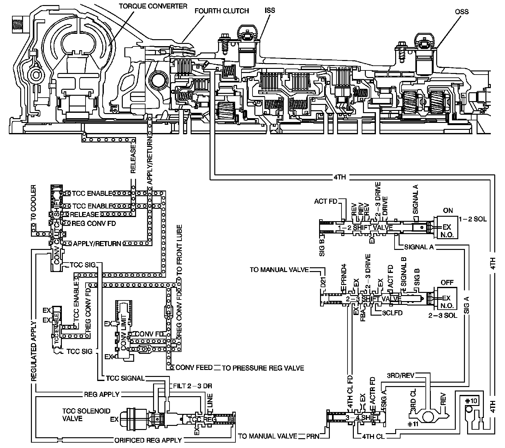

P0894
DTC P0894

Circuit Description
The transmission control module (TCM) monitors the engine speed, and the transmission output shaft speed. The TCM calculates turbine shaft speed and torque converter clutch (TCC) slip speed by using inputs from the automatic transmission input shaft speed sensor (AT ISS), the automatic transmission output shaft speed sensor (AT OSS), and other transmission components. The forward clutch housing is used as the ISS rotor. Whenever the TCC is engaged, engine speed and turbine speed will closely match, indicating low TCC slip speed. In D3 with the TCC engaged, calculated transmission component slip can only occur in the torque converter. In D4 OVERDRIVE with the TCC engaged, transmission component slip can occur in the TCC or the fourth clutch assembly.
If the TCM detects an excessive TCC slip speed in D4 OVERDRIVE, when the TCC should be engaged, then DTC P0894 sets. DTC P0894 is a type B DTC.
DTC Descriptor
This diagnostic procedure supports the following DTC:
DTC P0894 Transmission Component Slipping
Conditions for Running the DTC
^ No transmission ISS DTCs P0716 or P0717.
^ No transmission OSS DTC P0722, or P0723.
^ No TCC PWM solenoid valve performance DTCs P0741 or P0742.
^ No 1-2 SS valve DTCs P0751 or P0752.
^ No 2-3 SS valve DTCs P0756 or P0757.
^ No 1-2 SS valve electrical DTCs P0973 or P0974.
^ No 2-3 SS valve electrical DTCs P0976 or P0977.
^ No TFP manual valve position switch DTCs P1810, P1816 or P1818.
^ No TCC PWM electrical DTCs P2763 or P2764.
^ The engine is running for 5 seconds or greater.
^ The TFT is between 20-130° C (68-266° F).
^ Vehicle speed is above 48 km/h (30 mph).
^ TFP manual valve position switch indicates D4.
^ The calc. throttle position is 8 percent or greater.
^ Speed ratio is 2.25-0.70.
^ The engine torque is greater than 50 N.m (37 lb ft).
^ The TCC is commanded ON at 65 percent duty cycle or greater for 5 seconds or greater.
^ TCC is locked ON for greater than 0.1 second.
Conditions for Setting the DTC
The TCM detects slip in the torque converter clutch and/or the fourth gear clutch pack with the TCC in an apply or locked mode. DTC P0894 sets during the second consecutive trip when one of the following conditions occur:
Condition 1
The TCC slip speed is between 100 RPM and 1500 RPM for 10 seconds or more for 3 occurrences.
Condition 2
The following sequence of events occur:
^ The TCC slip speed is between 100 RPM and 1500 RPM for 10 seconds or greater, the TCM commands maximum line pressure and freezes adapts.
^ The TCC slip speed is between 100 RPM and 1500 RPM for 10 seconds or greater, the TCM commands the TCC OFF for 1.5 seconds or greater and freezes adapts.
^ The TCC slip speed is between 100 RPM and 1500 RPM for 10 seconds or greater.
Action Taken When the MIL/DTC Sets
^ The TCM requests the engine control module (ECM) to illuminate the malfunction indicator lamp (MIL) during the second consecutive trip in which the Conditions for Setting the DTC are met.
^ The TCM commands maximum line pressure.
^ The TCM forces the TCC off.
^ The TCM inhibits TCC engagement.
^ The TCM inhibits 4th gear if the transmission is in Hot Mode.
^ The TCM freezes transmission adaptive functions.
^ The ECM records the operating conditions when the Conditions for Setting the DTC are met. The ECM stores this information as Freeze Frame and Failure Records.
^ The TCM records the operating conditions when the Conditions for Setting the DTC are met. The TCM stores this information as Failure Records.
^ The TCM stores the DTC P0894 in TCM history during the second consecutive trip in which the Conditions for Setting the DTC are met.
Conditions for Clearing the MIL/DTC
^ The ECM turns OFF the MIL during the third consecutive drive trip in which the TCM does not send a MIL illumination request.
^ A scan tool can clear the MIL/DTC.
^ The TCM clears the DTC from TCM history if the vehicle completes 40 warm-up cycles without an emission related diagnostic fault occurring.
^ The TCM cancels the DTC default actions when the fault no longer exists and the ignition switch is OFF long enough in order to power down the TCM.
Diagnostic Aids
^ A TFP manual valve position switch malfunction can set DTC P0894.
^ A mechanical failure of the shift solenoids or TCC PWM solenoid valve can set DTC P0894.
^ Internal transmission failures can result in a DTC P0894.
^ Sticking or contaminated shift valves may cause intermittent slipping in D4.
^ DTC P0894 defaults to an elevated line pressure condition which may result in partial TCC apply. This may produce an idle surge that could stall the engine.
Test Description
The numbers below refer to the step numbers on the diagnostic table.
3. This step tests the indicated range signal to the actual selected range. A faulty TFP manual valve position switch can set a DTC P0894.
4. This step tests for excessive TCC slip speed while in a commanded TCC lock-up state and in fourth gear; and confirms that the fault is present.
5. This step tests for excessive TCC slip speed while in a commanded TCC lock-up state and in third gear.
6. This step tests for a sticking TCC shift valve.
7. This step tests for proper transmission line pressure.